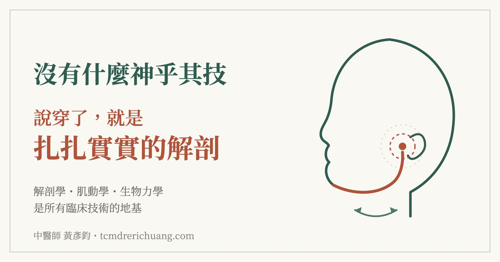
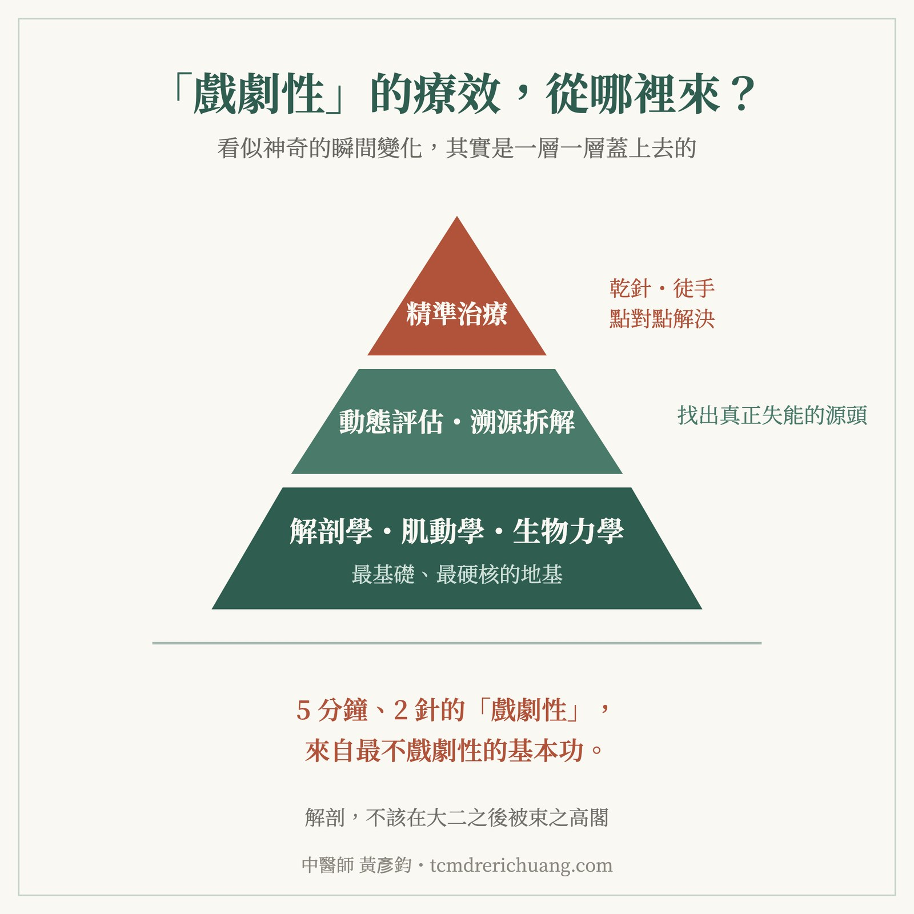

沒有什麼神乎其技，說穿了就是扎扎實實的解剖
【沒有什麼神乎其技，說穿了就是扎扎實實的解剖】
今天如同以往，擔任 肌筋膜脈學中醫應用-初階乾針工作坊 的助教，帶領了一群高年級的在學學弟妹。雖然他們還沒畢業，但眼裡的求知慾與實作時的專注，完全不輸給已經在臨床打滾的人。
課程尾聲的「自由搏擊」時間，除了加碼三頭肌與前臂伸肌的處理，也順手解決了一個意外的插曲。剛好這組有位學員深受顳顎關節（TMJ）開闔卡卡所苦，在評估完他的下頜動態後，確認是屬於較局部的單純型態。
前前後後不到 5 分鐘，僅用了 2 針，他的 TMJ 瞬間變得順暢，兩側活動也恢復對稱。
旁邊的同學看了一陣驚呼，下一秒立刻爆發連珠炮的提問：「為什麼？」、「思路是什麼？」、「剛剛那是怎麼處理的？」
看到他們那種被療效震撼後、迫切想知道背後原理的熱情，突然一股似曾相似的熟悉感湧上心頭，因為我當年當學生時，也是這種求知欲爆棚、想問到底的個性。我快速將顳顎關節開闔所涉及的肌群、動態，結合剛剛的評估結果，完整向他們分析了一遍。
最後的總結很簡單：這些，全都是『解剖』。
許多臨床上看似難解的卡關，答案其實就藏在最基礎、最硬核的學理中。只要熟悉解剖學、肌動學與生物力學，遇到相對單純的問題就能快速拆解，創造出所謂「戲劇性」的變化。這背後沒有浮誇的魔術，就是扎實的人體力學與解剖學。
遺憾的是，解剖學往往在大二修完後就被束之高閣。到了高年級，面對實習與二階國考的壓力更是無暇顧及；等到畢業進入臨床，少了外在的約束力，想再把解剖學拿出來精進、做到進階的臨床應用，幾乎是難上加難。
今天的教學互動，讓我更加篤定籌辦「表面解剖工作坊」的初心。
醫學不論中西，所有的臨床技術都必須建構在真實的人體基礎上。臨床變化有無限種可能，唯有踩穩扎實的人體解剖，才能在面對複雜病症時，真正做到溯源歸納，甚至觸類旁通地將各科專業串接起來。
表面解剖工作坊，對我而言，不僅是深具意義的教學活動，更是我認為現代中醫師必須高度重視的基礎學科。真正熟悉並靈活運用解剖學，無論是對醫者的臨床突破，還是對患者的治療成效，都有著不可替代的價值。

